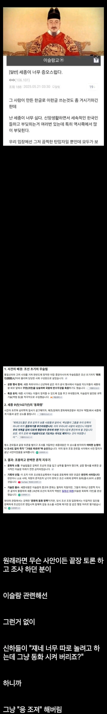

한반도 역사상 최고인 지도자
댓글
판단력 고트
얼마나 내다보신겁니까 K.I.N.G 세종...
그렇다고 세종이 무슬림들을 박대한 것도 아님. 이미 회회인들은 원나라 부마국이 된 고려로 정착하기 시작해서 태종 대부터는 집도 받고 삶의 터전도 얻었고, 나름 과학기술 도입 시 중추적인 역할 담당하기도 했으니까. 장씨 혹은 마씨 성을 받기도 하고, 잡과나 무과에 종사하면서 그럭저럭 잘 어울렸음. 상소의 핵심 내용도 '쟤네 다 조지자' 가 아니라 '회회인들이 아내를 얻지 못해서 걱정인데 이렇게하면 어떻습니까' 를 그대로 적용한 셈인거. 등따숩고 밥도주고 사회적으로 인정도 해주고 아내까지 국가가 나서서 중매해주는데 뭣하러 회회교를 유지하겠음? 사실 중앙아시아 출신 회회인들은 '그 당시에도' 나이롱 취급받았었고, 좀 유연하긴 했었지.
이슬람마갤은 원래 무슬림 코스프레하는 분탕들 많아서 저새끼는 걍 역사도 모르고 지껄이는거.
그 장씨 중 하나가 장영실인가보네
장영실 자체가 호로자식(욕 아님 말그대로의 뜻)이라 정황 자체는 유추해볼 순 있지. 일단 사서상으로는 아버지는 원나라 평강부에서 온 사람이고, 어머니는 알다시피 동래현 관기.
우우
회회인까진 몰라도 외인혼혈이구마
로마에선 로마법을 따라야지
판단력 GOAT
조지는게 맞음
모든 체계를 지들맘대로 하려해서
조선 인물캐리 GOAT 투톱
한분은 설마 이순신?
말해뭐해
구국의 영웅
회귀자인가 ㅋㅋ
킹갓세종이 그랬다면 어떤 이유가 분명히 있었을듯 일단은 조선이랑 유일신 신앙이랑은 상극임
세종대왕이 국민들한테는 성군이지만 그 태종의 아들입니다.
둘째아들 수양대군
이슬람은 국가에 얽메이지 않고 종교로서 그 왕국을 세운다며?
그러니까 한마디로 한국안에 다른 국가를 세우겠다는거잖아
그건 안되지
한반도 역사상 최고의 판단력 ㅋㅋ
지금으로 생각하면 그냥 귀화를 받아주는 방향에서 각종 의식주 지원도 다 해주는데 우리문화에 동화되는게 아니라 자꾸 이슬람문화를 고집하려 한거임
어느 누가 그냥 보고 놔두겠음
한반도 유기체 GOAT임
그래서 나도 문명할때 딴종교는 걍 받는데 이슬람은 배척함 ㅋㅋ
이거 1세기전에 일본이 우리에게 하던일인데?
기존 토착민에 대한 식민 지배랑 이민자랑 같은 선상에 놓는 건 좀...
세종이 집권하던 시기에는 당연할수도 있겠지.
근대 어느 나라건 이렇게 하면 고이고 망해.
그리고 예내들이 지금의 극단 이슬람들과 같은지도 의문이고
많은 사람들이 고려와 조선을 비교하면서 무역과 문화교류에 대해선
조선에 낙제점을 주잖아.
그거 허락해도 아마 조선에서 쥐똥만한 소수였을걸?
그들과 교류해서 가지고 올수 있는 이득보다 나을거 같지가 않은데.
1453년에 동로마 제국이 메메트에게 망하고 이슬람문명의 전성기가 오잖냐
계내들에게 뽑아 낼 기술보다, 조선에서 평생 다수가 될 가능성이 없는
극 소수자 동화가 더 중요할까?
난 세종이 잘했다 못했다 말한 적 없고, 니가 일본 얘기를 꺼낸 거에 대해서 다른 케이스 같다고 댓글 단 건데, 뭔 얘기를 하고 있는 거임?
걍 니 하고 싶은 얘기 하는 거면 나한테 대댓글 달지말고 댓글 하나 새로 써
니가 멍청해서 이해를 못하는거 어니냐?
니논점이 뭐야?
기존토착민인 일본지배와 조선시대 소수자인 이슬람동화를
같은선상에서 비교하지 말란거 아님?
그래서 내가 답 하잖냐. 세종시기의 이슬람 동화가 그 당시로선 당연할수 있을지는
몰라도 그게 장기적으로 조선에 도움이 되었다고 볼수는 없다.
니미 이간단한 한문단도 이해를 못해서 세상 어떻게 살아갈려고
인생을 그 따로 사냐? 3줄 넘어가면 이해 못하는 애세끼야?
떠먹여줘?
ㅋㅋ 멍청한 애들 특 : 논점과 상관없이 자기 하고 싶은 말만함. 비속어 한마디도 안 섞고 댓글 달았는데, 거기다 대고 천박하게 욕은 잘하네.
내 논점을 파악한 거까지는 좋은데, 거기서 그 시대에 당연하니, 장기적으로 도움이 안 됐다느니 그 얘기가 왜 나오냐고.
일본지배는 아예 다른 얘기고, 여기 갖고올 얘기가 아니라니까? 너는 일본지배 얘기를 왜 끌고 들어왔는지를 애기해야 우리 대화가 성립이 되는데, 니가 하고 싶은 말만 앵무새처럼 계속 하고 있잖슴 ㅋㅋ
무슬림이 ㅈ같은 이유는 그들이 타인을 배척하기때문임
킹갓세종대왕님...
G.O.A.T